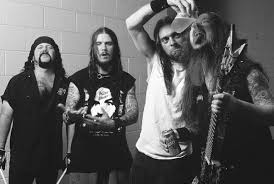
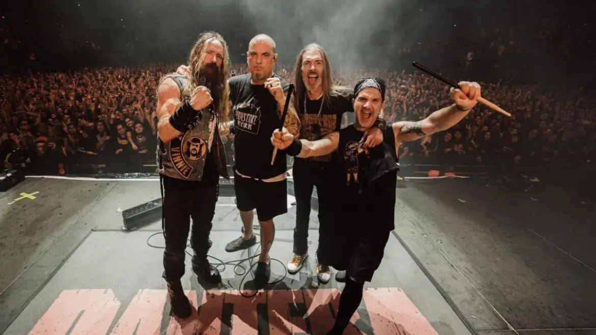

O guitarrista Dimebag Darrell quase entrou para o Megadeth antes do Pantera estourar mundialmente.

VERDADE. Dave Mustaine o convidou em 1989. Dimebag aceitou, mas com a condition de levar seu irmão, o baterista Vinnie Paul. Como o Megadeth já tinha baterista, o negócio não rolou.